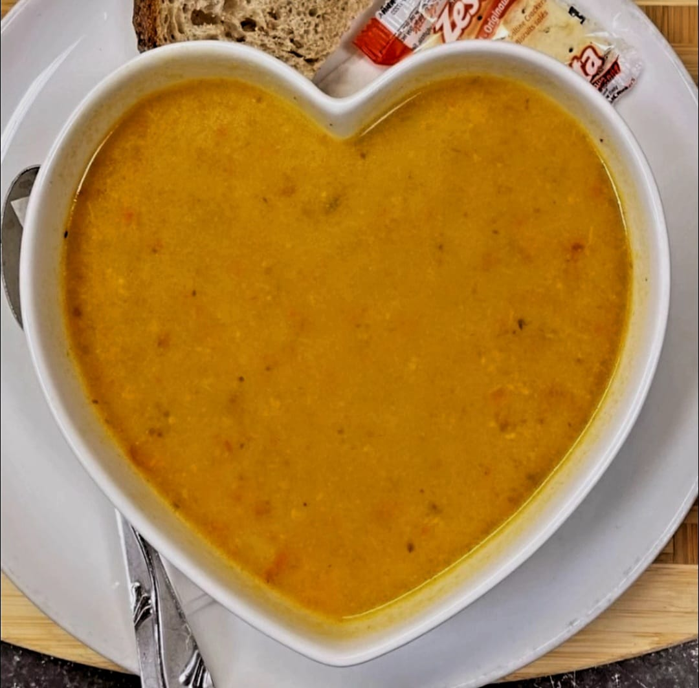

Soup Du Jour has been growing in popularity due to its delicious and healthy soups. Since opening its doors for the first time in 2007, Soup Du Jour, has been pleasing customers with innovative soups that combine both flavour and fine ingredients. Chef Talk, prides himself on diversifying the palates of even the biggest critic. His unique soup ideas keep customers coming back for more. He uses local suppliers whenever possible so customers can feel good that they have supported local businesses. Soup Du Jour’s soup and coffee containers are compostable and environmentally friendly packing is used whenever feasible. And if that’s not enough to make customers feel good about their purchase there is always the comfort of knowing that Soup Du Jour is a healthy and delicious choice!
